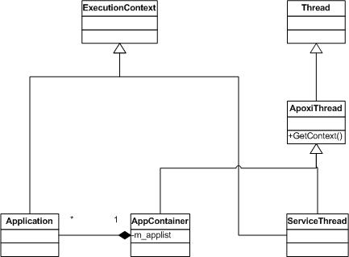

Until now every Application had to be placed into an
ApplicationContainer in which it was running; the
ApplicationContainer themselves are the threads that are handled by
the OS scheduler, internally they schedule their Applications
cooperativly. Recently several Applications, like multiplayer games
need a thread in the background that for example keeps a connection
alive or sends messages all the time. Those threads do not need any
user interaction, which means most of the heavy (concerning memory
and process time) gui interaction, that an Application would offer,
is not needed for them. Out of this request the new class
ServiceThread has been introduced and with it several other changes
where made. Following there is a quick overview about what has
changed and what still is handled as before.

This new class derives from Thread and provides a method GetContext() which returns the current active context (this method has to be implemented by derived classes). It is a base class to both, AppContainer and ServiceThread, one could see it as a thin layer between Thread and the underlying implementing classes. Calling ApoxiThread::GetContext() on an ApplicationContainer means that the current active Application is returned, calling it on a ServiceThread returns the ServiceThread itself.
ExecutionContext is the new base class to ServiceThread and Application. It defines the Context in which an ApoxiThread is running. An ExectuionContext can hold user defined dispatchers, handle messages which are registered for it, and process active waits using conditions. Some of this functionalities were previously implemented by Application others by ApplicationContainer, but as ServiceThread needed all those functionalities they were factorized into this common base class. Some of this methods are not handled by the Application directly, for example receiving a Message, which is done by the ApplicationContainer, therefore those methods are mapped back from Application to ApplicationContainer. The method ExecutionContext::GetCurrentContext() returns the context of the currently running ApoxiThread.
Like an ApplicationContainer a ServiceThread runs in its own Context, which means it does not need to be put in an ApplicationContainer as Applications have to. As it needs no user interaction, lots of the things that an Application would provide would be heavy overhead. One could see it as a lightweight Application that runs in the background. It implements its own MessageHandling mechanism (the base class ServiceThread uses a MessageQueue, the same mechanism implemented by ApplicationContainer). Examples for ServiceThreads are all those Applications that need to run in the background all the time (like a service in MicrosoftWindows does for example).
The ApplicationContainer holds a list of Applications as in earlier versions of APOXI. Deriving from ApoxiThread it needs to be able to return it's active context, which means returning the current active Application.
An Appliccation is running in an ApplicationContainer (cooperativ scheduling) and is derived from ExecutionContext, which means it is able to handle messages and dispatchers. Some of this functionalities are not handled by the Application itself but mapped back to the ApplicationContainer like receiving a Message or passing it on to other Containers.